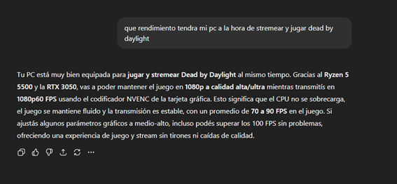
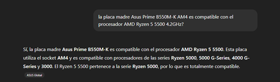
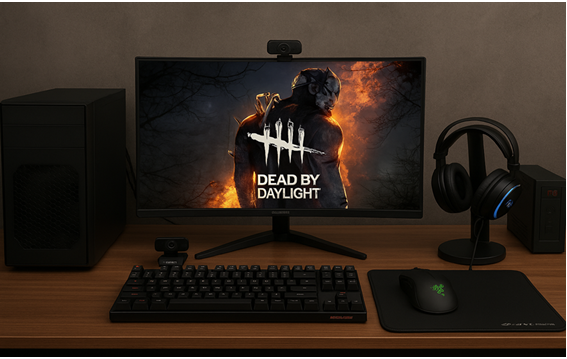

Requisitos mínimos
- [Pendiente completar]
Tema: Streaming de videojuegos
Profesores: Bioing. Ismael Cassi - Lic. Paolo Orundés Cardinali
Integrantes del Grupo: [Pendiente completar]
Comisión: [Número de comisión]
Fecha de Entrega: [Pendiente completar]
Año Lectivo: 2025
Elegimos Dead by Daylight porque es un juego popular y transmitido en vivo, pero que no exige una computadora de gama muy alta. De esta forma podemos armar un presupuesto accesible que permita jugarlo y streamearlo en buena calidad, sin necesidad de gastar de más.
Justificación de la elección: La PC se pensó para lograr un equilibrio entre precio y rendimiento, priorizando la experiencia en juegos a 1080p y la capacidad de transmitir en vivo sin caídas de rendimiento.
Total estimado en hardware: $1.299.139
Justificación de Software Base: Windows 11 es una buena elección para esta computadora porque aprovecha muy bien el hardware moderno, especialmente los procesadores como el Ryzen 5 5500 y las placas de video Nvidia RTX. El sistema está optimizado para manejar tareas exigentes como jugar y transmitir al mismo tiempo, ofreciendo un mejor uso de los núcleos del procesador y una interfaz más fluida.
Motivos por los que descarte dicho setup: elegí mi setup por encima del anterior, porque si bien son componentes que dan resultados parecidos, mi configuración es mas moderna aunque un poco mas cara, sin embargo a futuro no quedara tan obsoleta y por una inversión un poco mayor es más conveniente, además el Ryzen 5 5500, aunque similar al 3600, es más eficiente en tareas modernas y tiene mejor optimización para Windows 11 y para juegos recientes, gracias a su arquitectura Zen 3, también la placa de video RTX 3050 es más potente y moderna que la GTX 1660 Super. Además, tiene soporte para tecnologías nuevas como DLSS y Ray Tracing, que mejoran la calidad visual y el rendimiento en juegos actuales.
Análisis breve del rendimiento (hecho con IA):


Tabla comparativa hecha con IA
Característica: Arquitectura
Característica: Núcleos / Hilos
Característica: Frecuencia Base / Boost
Característica: Caché L3
Característica: PCIe
Característica: TDP
Característica: Rendimiento en Juegos
como se muestra en la tabla ambos procesadores comparten misma cantidad de hilos y núcleos, y unas características similares, pero son de generaciones diferentes y la arquitectura entre uno y otro hace la diferencia, el Ryzen 5 500 muestra un rendimiento superior en juegos a 1080 además de ser superior en rendimiento single-core, por estas características creo que es mejor opción, aunque su precio sea más elevado.
Respuesta de la IA: CPU (Unidad Central de Procesamiento). Es el “cerebro” de la computadora. Se encarga de ejecutar instrucciones de programas y coordinar todas las operaciones del sistema. Su rendimiento afecta directamente la velocidad de procesamiento y la capacidad de ejecutar tareas complejas.
Traducción al “lenguaje común”: Es una pieza fundamental de la computadora, por no decir la mas importante, se encarga de procesar todos los datos de la computadora y administrar las tareas, mientras mas potente sea nuestro procesador más rápido y mejor podrá resolver nuestros problemas y tareas, y además podrá ejecutar programas exigentes como videojuegos o programas de edición, los cuales exigen mucho al procesador.
Respuesta de la IA: RAM (Memoria de Acceso Aleatorio). Es la memoria temporal que usa la computadora para guardar datos de los programas que están en uso. Cuanta más RAM tengas, más programas o tareas puede manejar tu computadora al mismo tiempo sin volverse lenta.
Traducción al “lenguaje común”: Es como la memoria a corto plazo de la computadora, la PC guarda temporalmente todo lo que está usando en este momento como los programas abiertos, las pestañas del navegador, los documentos que estás editando. Básicamente mientras más memoria RAM tenga nuestro pc más cosas puede manejar al mismo tiempo sin ponerse lenta, lo recomendable es 16 GB.
Respuesta de la IA: GPU (Unidad de Procesamiento Gráfico). Es un procesador especializado en manejar gráficos y cálculos visuales. Es fundamental para videojuegos, edición de video y software de diseño. Una GPU potente permite renderizar imágenes y videos más rápido y con mejor calidad.
Traducción al “lenguaje común”: La GPU o tarjeta grafica, es como un procesador especializado a la parte grafica de la pc, este se encarga de mostrarte todo lo que ves en pantalla, la GPU se usa para jugar videojuegos principalmente, y también para editar, mientras mas potente sea nuestra GPU mejores imágenes (gráficos) vamos a ver en nuestra pantalla a la hora de jugar.

Imagen generada con IA que representa el setup para stremear
hace un setup gamer para stremar de principiante, la foto debe ser de frente, en la pantalla se debe ver el juego dead by daylight,la foto debe ser estilo fotorrealista, con los siguientes componentes (AMD Ryzen 5 5500 4.2GHz (con cooler incluido) Asus Prime B550M-K AM4,2x8GB DDR4 3200MHz Hiksemi Armor (16GB total),MSI Nvidia Geforce RTX 3050 Low Profile 6GB OC GDDR6, 1TB Patriot P400 Lite NVME M.2 PCIe Gen4 X4 4.0,Thermaltake Smart 600W 80 Plus White,Solarmax Curvo 24" 100Hz FHD ,Redragon K552 Kumara Mecánico,Razer DeathAdder Essential, Fury Yari Speed XL , Auricular Fury Warhawk RGB Black – Blue ,WEBCAM REDRAGON GW600 FOBOS ,Forza NT-752A Interactive 750VA/375W 45-65Hz 4-IRAM Sin)
Explicación de la imagen representativa: esta imagen representativa, muestra un setup gamer, capaz de poder jugar y stremear a una buena resolución y taza de fps, sin necesidad de tener un pc de gama alta ni los mejores componentes, dicho build está configurado, buscando un equilibrio entre calidad-precio, buscando un buen rendimiento sin gastar demasiado. En pocas palabras es bueno para jugar y streamear porque tiene un equilibrio sólido entre procesador, placa de video y memoria, que son los componentes clave para rendimiento en juegos y streaming.
[Pendiente completar]